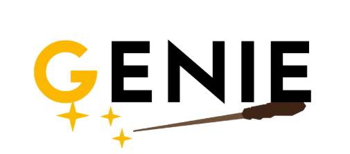
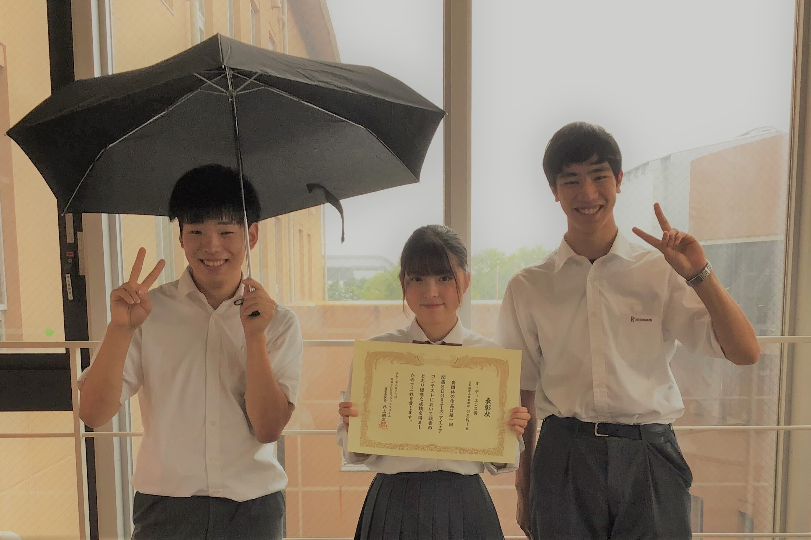
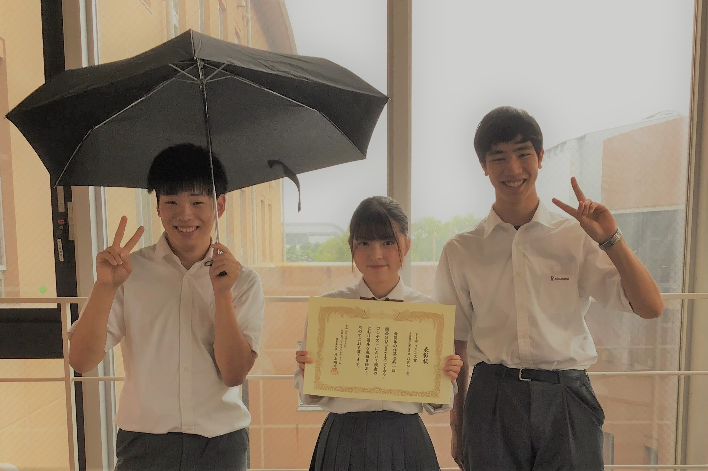
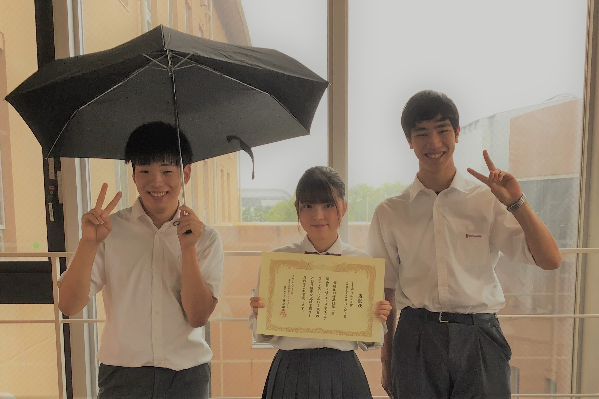
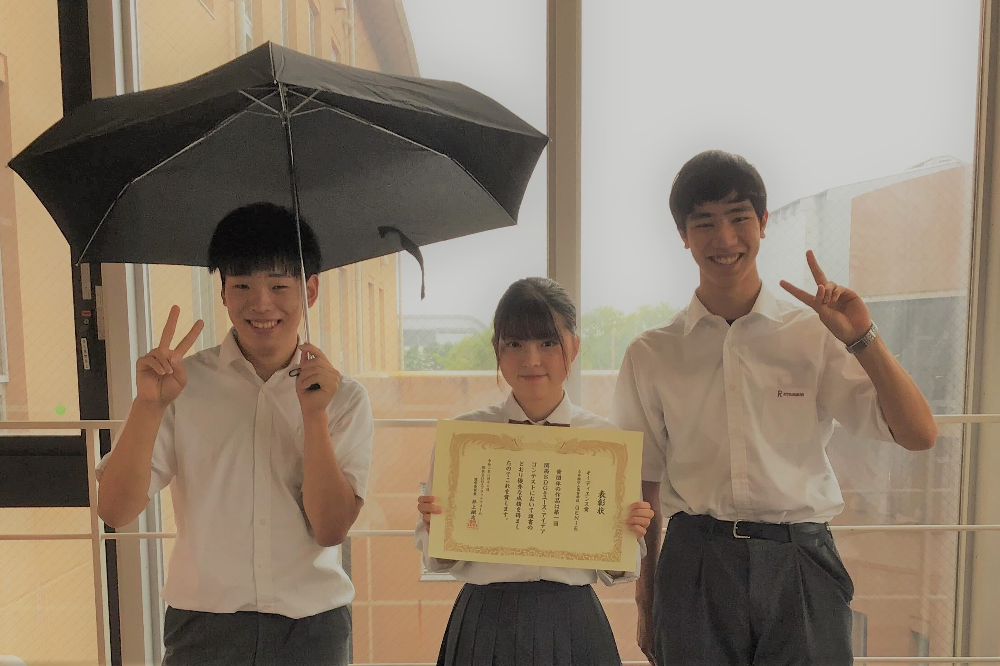
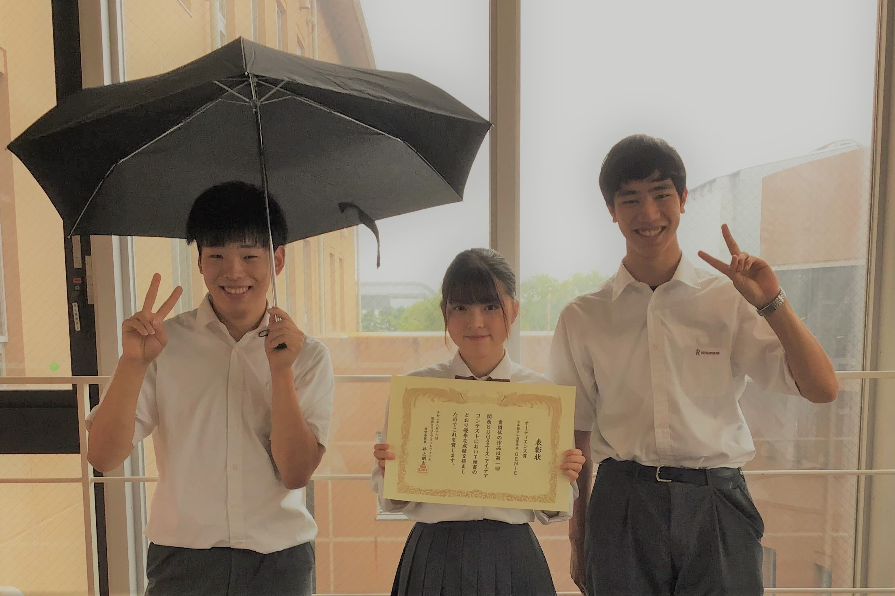

Loading..
Top Page


GENIEとは？
インパクトゼミ内で2019年9月
に設立されたグループ。
主な活動内容はビジネスコンテストや
アイデアコンテストへの出場
History
2019年10月 GENIE結成
2019年11月 キャリア甲子園優勝を目標にする
2019年12月 キャリア甲子園1次審査通過
2019年12月 年末デスマ
2020年 1月 キャリア甲子園2時審査通過
2020年 1月 関西SDGsユースアイデアコンテスト1次審査通過
2020年 2月 キャリア甲子園準決勝勝利
2020年 3月 キャリア甲子園決勝中止
2020年 3月 関西SDGsユースアイデアコンテスト延期
2020年 3月 ワンダリングチャレンジ参加
2020年 5月 SW LIVE出演
2020年 5月 ビヨンドコロナコンテスト主催
2020年 6月 MBSミント取材
2020年 7月 NHK取材
2020年 7月 いったん活動休止
2020年 8月 関西SDGsユースアイデアコンテストオーディエンス賞獲得
2020年 8月 学校説明会でのプレゼン
2020年10月 再結成
2020年11月 STEAM JAPAN AWARD 2020一次審査通過
GENIEについてもっと知る
Read More
関連動画

 


